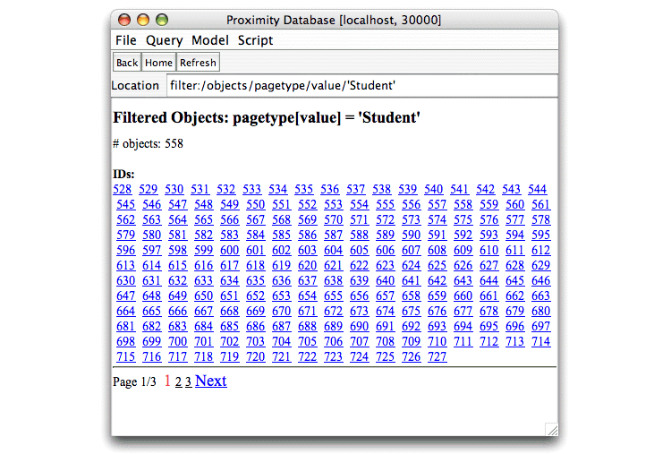

In addition to looking at at database in terms of its objects and links, Proximity allows you to approach it in terms of its attributes. Proximity separates object attributes from link attributes, but otherwise both support the same operations.
Exercise 4.2. Exploring attributes:
Before beginning, make sure that you are serving the ProxWebKB database using Mserver. Start the Proximity Database Browser if it is not already running.
-
Click Home to go to the Proximity Database Browser start page.
-
Click Object Attributes. Proximity displays a list of the object attributes in the ProxWebKB database.

This list shows all the attributes that an object may have. Each object need not have a value for every attribute.
The Object Attributes page includes a create new link for adding a new object attribute to the database. Clicking create new opens the Create New Attribute dialog, allowing you to specify the new attribute name and a function for assigning values. See “Adding a New Attribute” for an example of a function that assigns values to the new attribute; the syntax for this function is further described in the Javadoc documentation for the
AddAttributeclass. -
Click pagetype. Proximity displays a histogram (table) showing the values and counts for the pagetype attribute. The table is initially sorted by count, with the highest count shown first. Click value to sort the table by attribute value.

Row count indicates how many instances of this attribute occur in the database. Because each object in ProxWebKB has a pagetype attribute, there are 4135 instances of the pagetype attribute in the database. Because Proximity supports set-valued attributes, some attributes such as page_words_top100 may have a higher row count, indicating that some objects have more than one value for that attribute.
Column count indicates how many dimensions a single value contains. In the ProxWebKB database, all original attributes have just a single dimension, although attributes that store model predictions (added by completing the exercises in Chapter 7, Learning Models) employ two dimensions. Other databases might have multi-dimensional attributes, such as an attribute containing an (x,y) pair representing spatial coordinates. Proximity can store multi-dimensional data, but it cannot currently use multi-dimensional attribute values in queries.
Object attribute pages also include delete and export links:
-
Clicking delete removes this attribute and all its values from the database. (If you want to experiment with removing attributes, take care not to remove the pagetype attribute as it is needed in later exercises. You can safely remove the url_hierarchy2 or url_hierarchy3 attributes without affecting later Tutorial exercises.)
-
Clicking export writes the object or link IDs and attribute values to a tab-delimited text file suitable for importing into another application.
The attribute list is initially sorted by count, with the most numerous value shown first. Click value to sort the list alphabetically.
-
-
Click Student. Proximity displays a list of objects whose pagetype attribute has the value Student. Said differently, Proximity filters the list of objects by the selected attribute value.
 -
Click Back to return to the Object Attributes page.
-
Click page_words_top100. Proximity displays summary information for this attribute.
Because ProxWebKB objects have multiple values for this attribute, its row count is much higher than the number of objects in the database.
-
Click Home to return to the Proximity Database Browser start page.
-
Click Link Attributes. Proximity displays a list of the link attributes in the ProxWebKB database. Links in ProxWebKB have two attributes, link_id and link_tag.

The Link Attributes page also includes a create new link for adding a new link attribute to the database. Clicking create new opens the Create New Attribute dialog, allowing you to specify the new attribute name and a function for assigning values. See “Adding a New Attribute” for an example of a function that assigns values to the new attribute; the syntax for this function is further described in the Javadoc documentation for the
AddAttributeclass. -
Explore the link attributes. Every link in ProxWebKB has a value for each of these attributes: a link_tag that indicates the relationship of one web page to another in a file hierarchy, and a link_id that provides a unique identifier for each link. As with other long pages, the link_id page only displays the first 200 entries.
Like object attribute pages, link attribute pages include a delete link removes that attribute and all its values from the database, and an export link that exports the attribute values to a tab-delimited text file suitable for importing into another application.
-
Continue exploring the ProxWebKB database. When you are finished, continue to the next section.